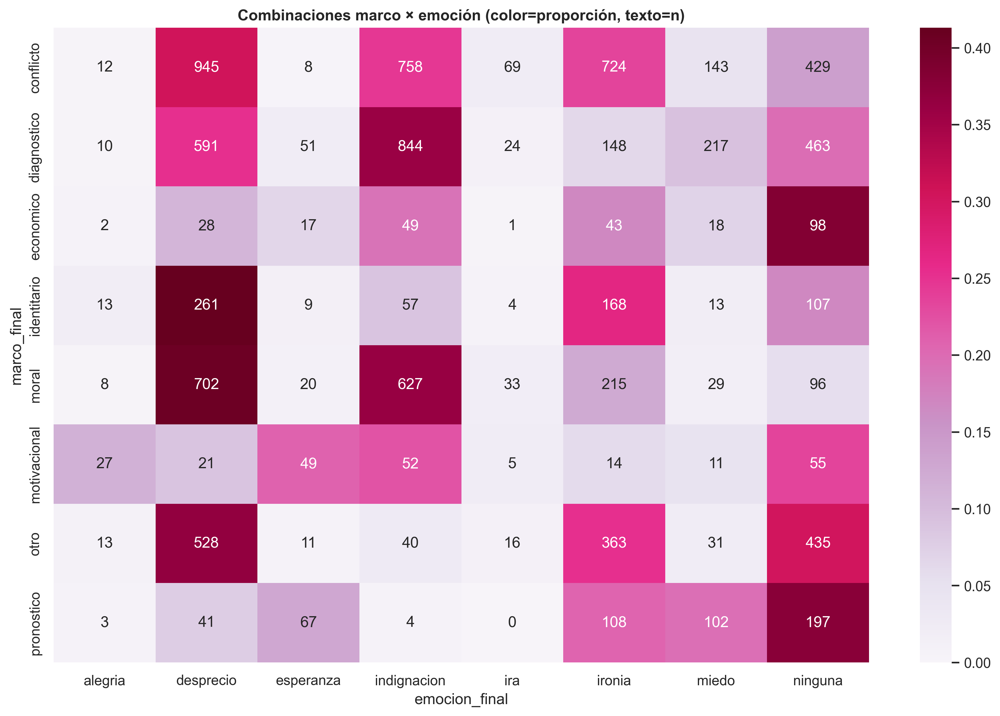
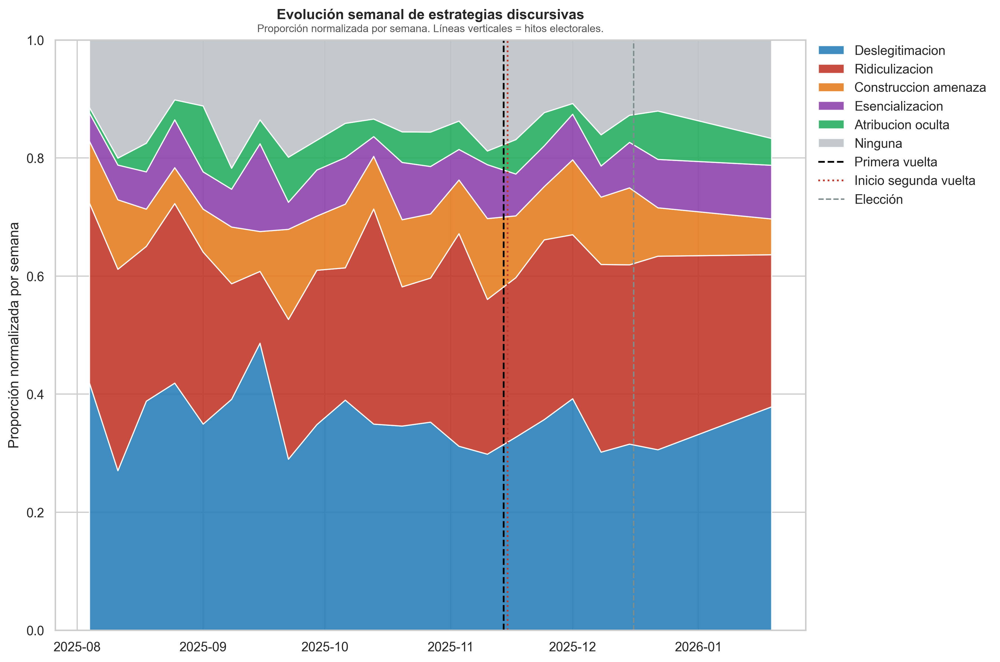
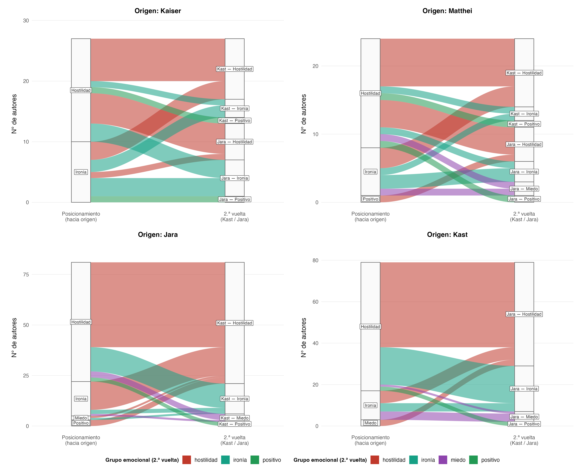
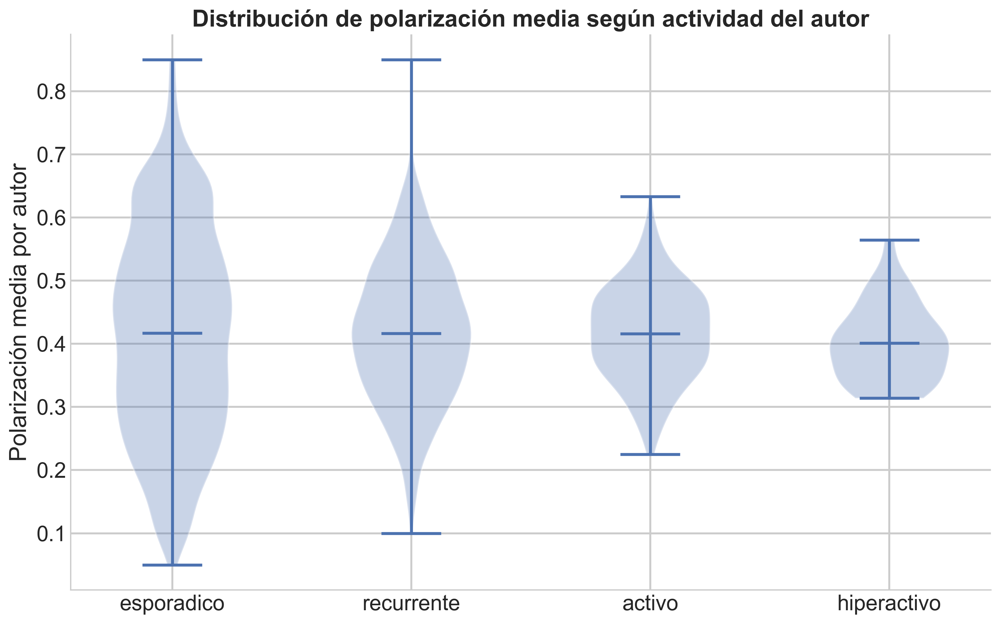
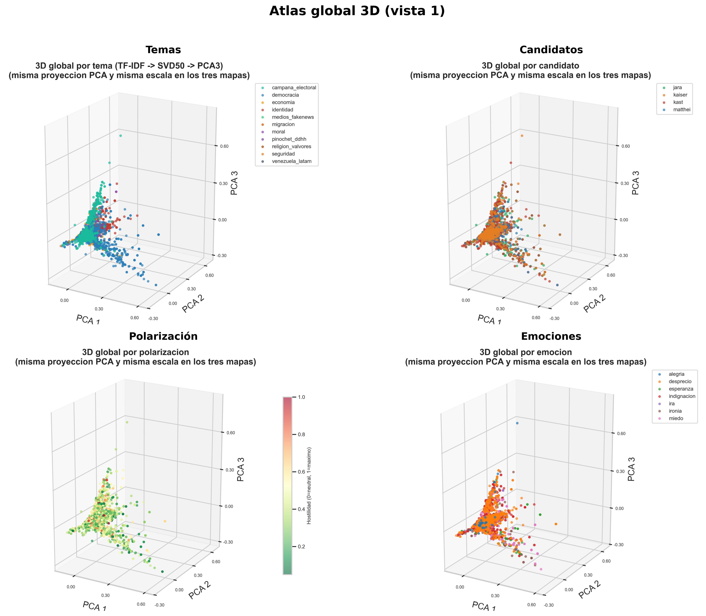

| Estrategia | Inter | Intra | Sin.frontera |
|---|---|---|---|
| Atribución oculta | 0.548 | 0.175 | 0.277 |
| Construcción de amenaza | 0.663 | 0.101 | 0.236 |
| Deslegitimación | 0.578 | 0.183 | 0.239 |
| Esencialización | 0.660 | 0.111 | 0.229 |
| Ninguna | 0.329 | 0.130 | 0.540 |
| Ridiculización | 0.483 | 0.219 | 0.298 |
8 Interpretación de Resultados
Anotación LLM dual y polarización discursiva en Reddit durante las elecciones chilenas de 2025
8.1 Reconfiguración del antagonismo: estrategias, marcos y fronteras
Estrategias por candidato
En este apartado conviene distinguir dos agregaciones: la frontera política del comentario (inter-bloque, intra-bloque o sin frontera) y el candidato objetivo al que se dirige el mensaje. La Tabla 8.1 cuantifica la primera: proporción de cada estrategia discursiva según tipo de frontera. La distribución por candidato se incluye en el Anexo A (Figura 10.2).
Esa lectura por frontera revela un patrón que merece atención: la lógica del antagonismo no se distribuye homogéneamente. Las estrategias de mayor carga adversarial — construcción de amenaza (66.3% inter-bloque) y esencialización (66.0%) — se concentran abrumadoramente en la confrontación entre bloques ideológicos, mientras que la ridiculización presenta una distribución más equilibrada (48.3% inter, 21.9% intra). Esto sugiere que la hostilidad no opera como un fenómeno unitario: su forma cambia según la arquitectura del adversario que el comentario construye. Cuando el enemigo es externo al bloque, se recurre a estrategias que lo presentan como amenaza esencial; cuando la disputa es interna, predomina un registro más irónico y deslegitimador.
8.2 Combinaciones discursivas y dinámica temporal
Marco × emoción
Las combinaciones entre marco y emoción (valores numéricos en el Anexo A, Tabla 10.12; visualización en Figura 8.1) permiten ir más allá de las distribuciones marginales y observar cómo se acoplan ambas dimensiones. No toda emoción hostil se acopla del mismo modo al conflicto. Las combinaciones más frecuentes — conflicto + desprecio (n = 945) y diagnóstico + indignación (n = 844) — presentan niveles de polarización moderados (0.46 y 0.43 respectivamente). En cambio, combinaciones menos frecuentes como moral + desprecio (n = 702, pol. = 0.541) y otro + desprecio (n = 528, pol. = 0.544) empujan la polarización a niveles notablemente más altos. Este patrón sugiere que el desprecio acoplado a marcos morales constituye una configuración discursiva particularmente hostil, más que el conflicto explícito por sí solo.

Estrategias en el tiempo
La serie temporal de estrategias (Figura 8.2) permite observar si la arquitectura del adversario cambia en momentos electorales clave. La deslegitimación se mantiene como la estrategia más estable durante todo el ciclo, lo que sugiere un repertorio adversarial de base que no responde a la coyuntura. La ridiculización, en cambio, presenta mayor variabilidad y un peak notable antes de primera vuelta, consistente con un uso más reactivo y oportunista vinculado a la dinámica de campaña. En este punto interesa menos la fluctuación semanal y más la dirección general: la estructura adversarial del debate se mantiene fundamentalmente estable, con ajustes tácticos más que transformaciones de fondo.

8.3 Autores, persistencia y estructura del conflicto
Persistencia de negatividad hacia Kast
El análisis de autores introduce una dimensión que los modelos de texto no capturan: la estabilidad temporal de las posiciones individuales. De los 215 autores inicialmente negativos hacia Kast, 188 (87.4%) mantienen esa posición a lo largo de todo el ciclo electoral. Solo 6 transitan hacia un tono positivo (2.8%) y 21 hacia neutralidad (9.8%). Este nivel de persistencia indica cristalización actitudinal más que escalamiento reactivo: la negatividad hacia Kast no se construye progresivamente durante la campaña, sino que se presenta como una disposición previa que el ciclo electoral refuerza pero no origina. La tabla con la distribución porcentual completa figura en el Anexo A (Tabla 10.15).
Cruces de tono entre candidatos (posicionamiento → segunda vuelta hacia Kast o Jara)
En la segunda vuelta solo compiten Kast y Jara, por lo que el destino del cruce es siempre el tono hacia uno de ellos en esa fase. La tabla de cruces de tono (sin neutro) figura en el Anexo A (Tabla 10.14). La tabla de cruces emocionales figura en el Anexo A (Tabla 10.16). La Figura 8.3 resume los flujos en formato diagrama.

El patrón es nítido. Los autores negativos hacia cualquier candidato en posicionamiento permanecen negativos al transitar hacia Kast (97% en Jara → Kast) o hacia Jara (86–100% según el par). Más revelador aún: en todos los pares observados, los autores positivos hacia un candidato se vuelven negativos al cambiar de target — la positividad no sobrevive al cruce adversarial. La polarización aparece así ligada al marco del duelo electoral más que a trayectorias individuales de simpatía.
Actividad de autores y polarización
La lectura de autores permite evaluar si la hostilidad está concentrada en hiperactivos o distribuida en la masa de usuarios. Este punto es teóricamente relevante porque distingue una polarización sostenida por pocos actores intensivos de una polarización más difusa y ambiental.
La hostilidad discursiva en Reddit Chile durante la campaña presidencial de 2025 no está concentrada en un pequeño grupo de usuarios hiperactivos. Los autores clasificados como hiperactivos (más de 20 comentarios) presentan una polarización media similar a la de los usuarios esporádicos, con una tendencia levemente decreciente a medida que aumenta el número de comentarios, visible en la línea LOESS de Figura 10.3 (ubicada en el anexo). Esto sugiere que la hostilidad tiene carácter ambiental y difuso: no es producto de trolls coordinados sino de una cultura discursiva generalizada donde la crítica hostil es el modo dominante de participación política. Como resume la Tabla 10.15, la gran mayoría de quienes partieron negativos permanece en negativo; solo una minoría pasa a tono positivo o neutro, lo que sugiere cristalización actitudinal más que escalamiento reactivo (Efstratiou et al. 2023).

8.4 Espacios semánticos acoplados
El atlas (Figura 8.5) ofrece una lectura visual que complementa los hallazgos estadísticos anteriores. El panel de candidatos (superior derecho) muestra una superposición casi completa de los cuatro colores: no existen regiones exclusivas por candidato (De Francisci Morales, Monti, y Starnini 2021). Desde la perspectiva de Mouffe, esto sugiere que la frontera política no se traza entre vocabularios diferenciados, sino a través de un repertorio léxico compartido — la polarización es una propiedad del discurso, no del target.
El panel de emociones (inferior derecho), en cambio, presenta agrupaciones parciales reconocibles: la ira y el desprecio ocupan zonas distintas del espacio, indicando que se vehiculizan a través de vocabularios diferenciados. La dimensión emocional organiza el espacio discursivo con mayor poder que la dimensión del adversario, consistente con la literatura sobre polarización afectiva (Iyengar, 2019).
El panel de polarización (inferior izquierdo) completa la lectura: la hostilidad se distribuye de manera difusa a lo largo de todo el espacio, sin concentrarse en un cluster específico. Esta dispersión constituye la representación geométrica del hallazgo central de la tesis: la hostilidad es ambiental, no focalizada.
